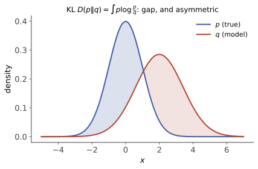

信息论 II · KL 散度与互信息
熵度量一个分布的不确定性，本页度量两个分布的差异（KL 散度）与两个变量的依赖（互信息）。这一页是现代机器学习的信息论心脏：MLE、交叉熵损失、RLHF 的 KL 正则、变分推断——全是本页两个概念的化身。
1. KL 散度

定义（相对熵）：
读法：真相是 \(p\)、你却按 \(q\) 编码/建模时，平均多付的比特数（下节精确化）。
定理（Gibbs 不等式） \(D_{\mathrm{KL}}(p\|q) \geq 0\)，取等当且仅当 \(p = q\)。 证明（两行）：\(-D = E_p\log\frac{q}{p} \leq \log E_p\frac{q}{p} = \log\sum q = 0\)（Jensen，\(\log\) 凹；取等需 \(\frac qp\) 恒定）。\(\blacksquare\)
——全站已三次使用它（ELBO、DPO、最大熵），证明原来只有两行。
两条脾气（用错会翻车）：不对称 \(D(p\|q) \neq D(q\|p)\)——前向 KL（\(p\) 真相在前）罚"真相有而模型无"（mode-covering，模型摊大饼）、反向 KL 罚"模型有而真相无"（mode-seeking，模型抱一个峰——变分推断偏窄、RLHF 保守性的来源）；不是距离（无三角不等式）——叫"散度"是有意的。
2. 交叉熵与 MLE 的信息论真身
交叉熵 \(H(p, q) = -E_p[\log q(X)] = H(p) + D_{\mathrm{KL}}(p \,\|\, q)\)。
分解读法：用模型 \(q\) 编码真相 \(p\) 的平均码长 = 不可约的熵 + 模型误差的 KL——最小化交叉熵 ⟺ 最小化 KL（\(H(p)\) 与模型无关）。
定理（MLE = 最小化 KL） 设经验分布 \(\hat p\)（数据的直方图），则
（第一个等号只是改写：对数似然的平均恰是 \(-H(\hat p, q_\theta)\)。）统计 II 的 MLE、ai 课 07 的 LLM 训练目标、信息论的最优编码，是同一件事的三种口音——本站最重要的三线合流之一。
3. 互信息
定义：
三种读法：联合分布偏离"假装独立"的程度；知道 \(Y\) 后 \(X\) 不确定性的削减量（上一页"信息不增"的差值）；两圆 Venn 图的交叠。性质：对称、非负（Gibbs 直接给）、\(I = 0 \iff\) 独立。
与相关系数的分工（概率 IV 的痛点补完）：\(\rho\) 只测线性（\(Y = X^2\) 时 \(\rho = 0\)），互信息捕捉一切依赖（\(Y = X^2\) 时 \(I > 0\)——\(Y\) 完全由 \(X\) 决定，\(I = H(Y)\) 拉满）。代价：\(I\) 需要估计整个联合分布，样本效率差——两者是"精度 vs 广度"的取舍。
数据处理不等式（DPI）：Markov 链 \(X \to Y \to Z\)（\(Z\) 只通过 \(Y\) 依赖 \(X\)）⇒
——加工不增信息：对数据做任何确定/随机的后处理，都不可能"榨出"比原数据更多的关于源头的信息（特征工程只能丢弃或保留，不能创造；估计量是数据的函数，故其对参数的信息不超过样本——统计 II Fisher 信息与充分统计量的信息论近亲）。Fano 不等式一嘴：由 \(H(X\mid Y)\) 给出"从 \(Y\) 猜 \(X\)"错误率的下界——"不可能定理"的通用武器。
4. 🔗 全站与 ML 对账
- RLHF/DPO 的 KL 缰绳（ai 课 07）：\(\max E[r] - \beta D_{\mathrm{KL}}(\pi\|\pi_{\mathrm{ref}})\)——反向 KL 的 mode-seeking 保守性正是"不许跑离参考策略太远"的实现；DPO 推导第一步的闭式解全靠 Gibbs 不等式；
- 变分推断/ELBO（comfy 课 02）：\(\log p(x) = \mathrm{ELBO} + D_{\mathrm{KL}}(q\|p_{\text{后验}})\)——证据下界的"下界"二字就是 Gibbs；
- 对比学习一嘴：InfoNCE 损失是互信息的下界估计——"表示学习 = 最大化表示与数据的互信息"是一整个流派的纲领。
5. 典型例题
例 1（两个高斯的 KL） \(D_{\mathrm{KL}}\big(N(\mu_1,\sigma^2)\,\|\,N(\mu_2,\sigma^2)\big) = \frac{(\mu_1 - \mu_2)^2}{2\sigma^2}\)（直接积分，交叉项对消）——高斯世界里 KL 退化为标准化欧氏距离的一半：均方损失的信息论出身。
例 2（不对称的体感） \(p = (\frac12, \frac12)\)，\(q = (0.99, 0.01)\)：\(D(p\|q) \approx 2.32\) 比特，\(D(q\|p) \approx 0.92\) 比特——"用偏见编码公平硬币"比反过来代价大得多（\(p\) 常踩中 \(q\) 认为几乎不可能的事件，\(\log\frac{0.5}{0.01}\) 巨大）。
例 3（互信息计算） 二元对称信道：\(X \sim B(1, \frac12)\)，\(Y\) 以 0.9 概率复制 \(X\)：\(I(X;Y) = H(Y) - H(Y\mid X) = 1 - h(0.1) \approx 0.531\) 比特——噪声吃掉了近一半信息；这个量正是下一页信道容量的原型。\(\blacksquare\)
下一页：信息论的两大顶点应用——最大熵原理（高斯分布的第三种出身）与信道编码，最后落到"压缩即智能"的现代命题。